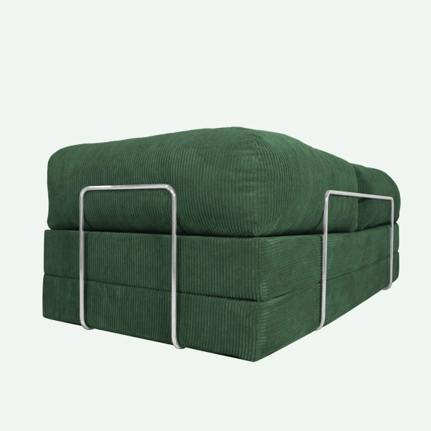
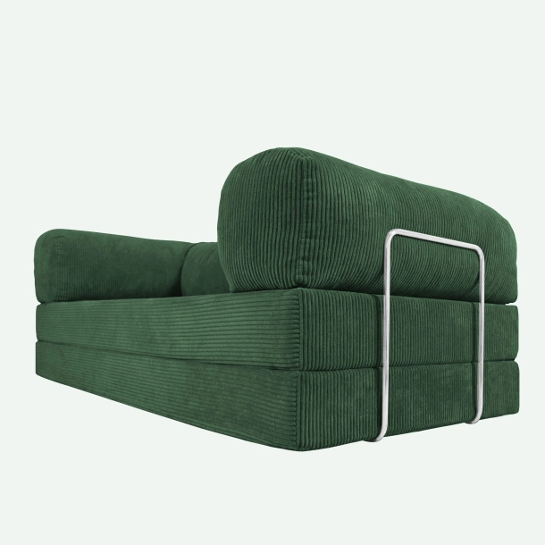
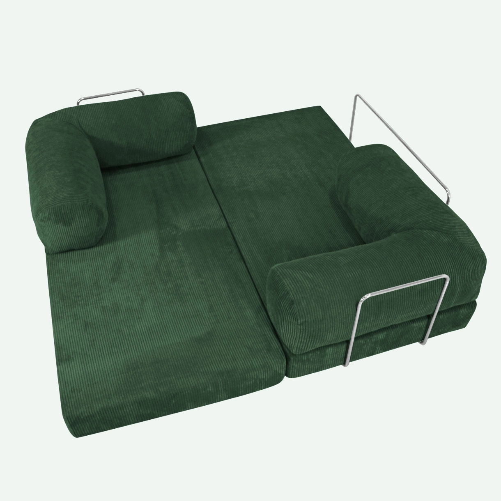
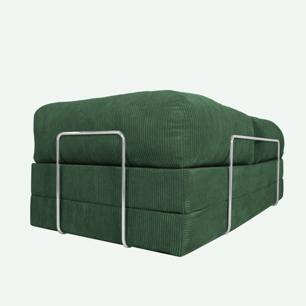
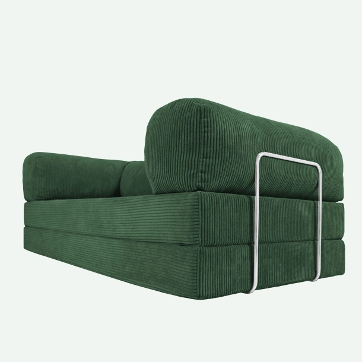
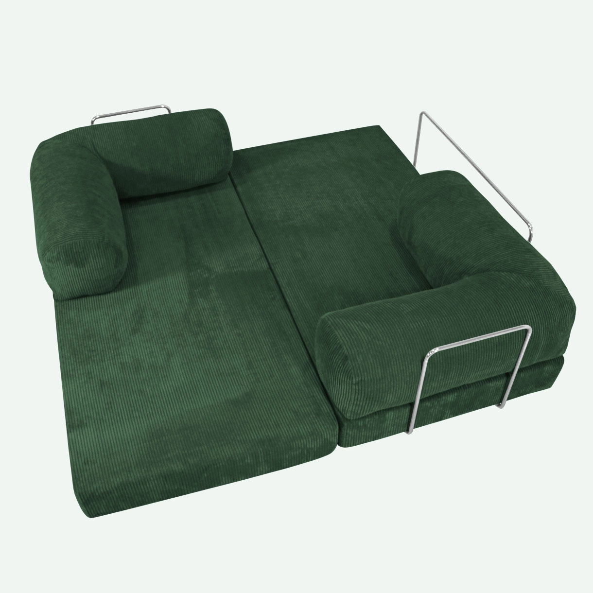

TEDDY / GRØN
VARENR: 001-5763
KLARNA - KØB NU, BETAL SENERE
PRODUKTBESKRIVELSE
TEDDY - en sovesofa efter den klassiske betydning. Han har ingen ben, håndtag eller avancerede, mekaniske konstruktioner, men han giver det blødeste bjørnekram og folder sig ud til en stor dobbeltseng med et snuptag. Teddy består af to madrasser og to vinkelhynder, som nemt kan flyttes rundt på. Han holdes sammen af tre mobile bøjler i forkromet jern. Madrasserne er af høj kvalitet, forholdsvis hårde, og god at sidde i og sove på. Vinkelhynderne indeholder granulat omkranset af et indvendigt stofhylster, som gør fløjlsstoffet nemt at lyne af.
Sidst, men ikke mindst, er TEDDY indhyllet i det blødeste, bredriflede fløjlsstof, som er yderst slidstærkt og af høj kvalitet.
VASKEANVISNING
Når det kommer til rengøring af TEDDY, så er den så smart indrettet at man kan lyne stoffet af på både hynder og madrasser. Det gør det muligt at vaske stoffet ved lav temperatur. Det anbefales at vaske ved maks 30° og med mild/ekstra skånsom sæbe.
PRODUKTINFORMATION
Størrelse: Bredde 200, dybde 100, højde 70, sædehøjde 34 cm.
Stof: 100% polyester (35.000 Martindale). Kan lynes af og renses.
Madrasser og hynder: Koldskum og granulat.